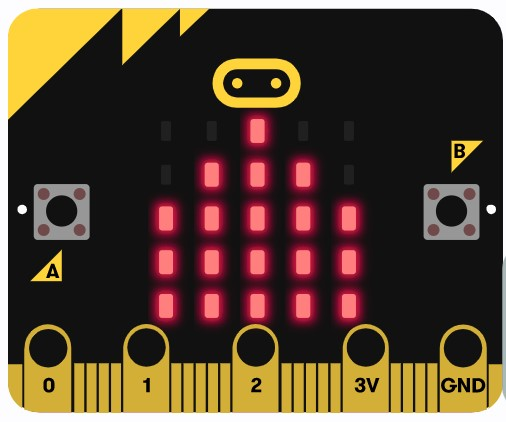

Has terminado la tarea y has aprendido cómo funciona una casa domótica, cómo realizar el diseño de una y la programación para distintos sensores y actuadores. Es el momento de valorar para qué puede ayudarte en tu vida todos estos conocimientos.
Has terminado la tarea y has aprendido cómo funciona una casa domótica, cómo realizar el diseño de una y la programación para distintos sensores y actuadores. Es el momento de valorar para qué puede ayudarte en tu vida todos estos conocimientos.

Has terminado la tarea y has aprendido cómo funciona una casa domótica, cómo realizar el diseño de una y la programación para distintos sensores y actuadores. Es el momento de valorar para qué puede ayudarte en tu vida todos estos conocimientos.
| Excelente | Satisfactorio | Mejorable | Insuficiente | |
|---|---|---|---|---|
| Identifico las partes de la placa micro:bit | Lo he hecho de manera autónoma. (2.5) | Lo he hecho pero he necesitado ayuda (1.75) | Lo he hecho, pero he necesitado una guía continua (1.50) | No he podido hacerlo (1.25) |
| Diseño un modelo 3D de una casa | Lo he hecho de manera autónoma (2.5) | Lo he hecho pero he necesitado ayuda (1.75) | Lo he hecho, pero he necesitado una guía continua (1.50) | No he podido hacerlo (1.25) |
| Reconozco distintos sensores y actuadores | Sería capaz de explicarlo (2.5) | Lo he entendido y sabría explicarlo con ayuda (1.75) | Lo he entendido pero no sabría explicarlo (1.50) | No lo he entendido (1.25) |
| Conozco la importancia de la tecnolgía en el hogar | Sería capaz de explicarlo (X) | Lo he entendido y sabría explicarlo con ayuda (X) | Lo he entendido pero no sabría explicarlo (X) | No lo he entendido (X) |
| Soy capaz de realizar pequeñas programaciones | Lo he hecho de manera autónoma (X) | Lo he hecho pero he necesitado ayuda (X) | Lo he hecho, pero he necesitado una guía continua (X) | No he podido hacerlo (X) |
| Realizo una exposición o presentación del proyecto | He sido capaz de explicarlo todo de forma coherente (X) | He sido capaz de explicarlo, pero he improvisado y ha faltado información (X) | Lo he explicado, pero he necesitado ayuda continua (X) | No he sido capaz de explicarlo (X) |

Obra publicada con Licencia Creative Commons Reconocimiento No comercial Compartir igual 4.0